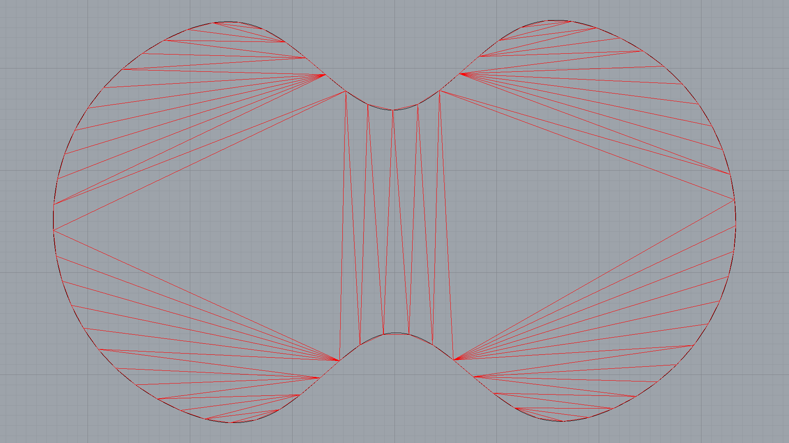

Remeshing 2D with GhPython

Downloads
"""Remeshing 2D in Grasshopper
Inputs:
boundary: A boundary curve
length: The target length of mesh edges
start: Computes the solution if `True`.
Output:
mesh: The Rhino mesh
"""
from __future__ import print_function
from __future__ import division
import rhinoscriptsyntax as rs
from scriptcontext import sticky as st
from threading import Thread
import compas_ghpython
from compas.datastructures import Mesh
from compas.datastructures import trimesh_remesh
from compas.geometry import delaunay_from_points
# define keys to store data in Gh component
guid = str(ghenv.Component.InstanceGuid) # unique key
mesh_key = "mesh_" + guid # key for compas mesh
rmesh_key = "rmesh_" + guid # key for rhino mesh
running_key = "running_" + guid
# the callback is to update the Gh component
def callback(mesh, k, args):
# draw a rhino mesh and save in sticky dictionary
st[rmesh_key] = compas_ghpython.mesh_draw(mesh)
# update the Gh component
compas_ghpython.update_component(ghenv, 1)
# the remeshing algorithm should run in a thread
def threaded_function():
trimesh_remesh(st[mesh_key],
target=length,
kmax=500,
allow_boundary_split=True,
allow_boundary_swap=True,
callback=callback)
st[running_key] = False
if running_key not in st:
st[running_key] = False
if mesh_key not in st or start:
# divide the boundary curve into segments of a specific length
points = rs.DivideCurve(boundary, rs.CurveLength(boundary) / length)
# generate a delaunay triangulation from the points on the boundary
faces = delaunay_from_points(points, boundary=points)
# save mesh into sticky dictionary
st[mesh_key] = Mesh.from_vertices_and_faces(points, faces)
# start or restart
if start and st[running_key] is False:
thread = Thread(target=threaded_function)
thread.start()
st[running_key] = True
# make the result visible in the outlet 'mesh'
if rmesh_key in st:
mesh = st[rmesh_key]